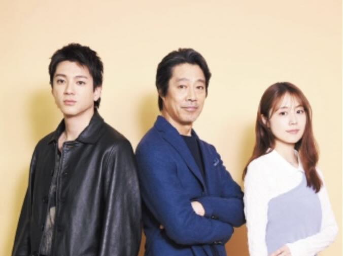
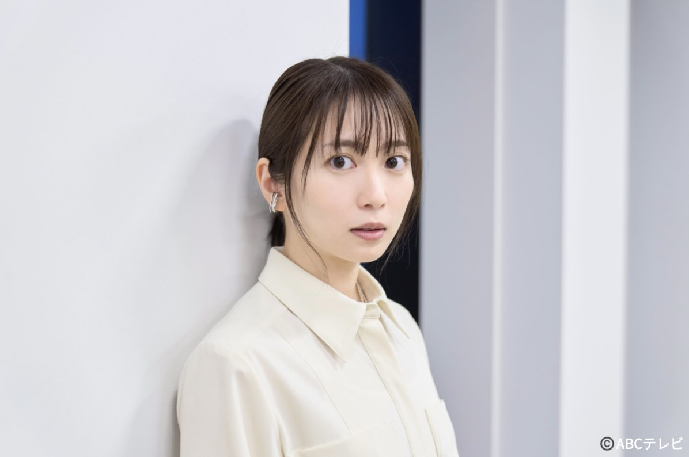
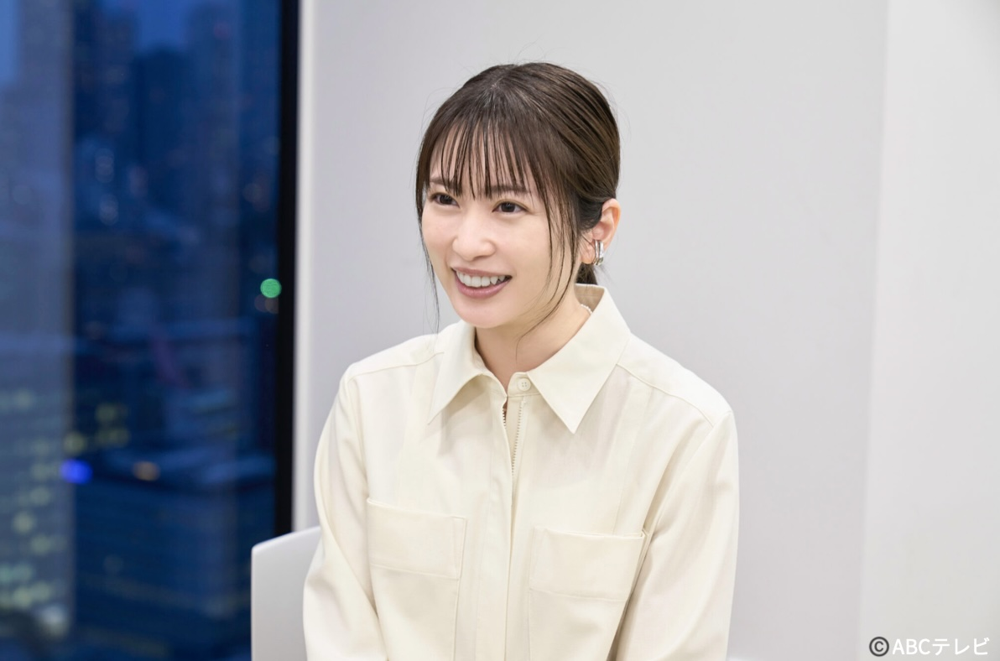
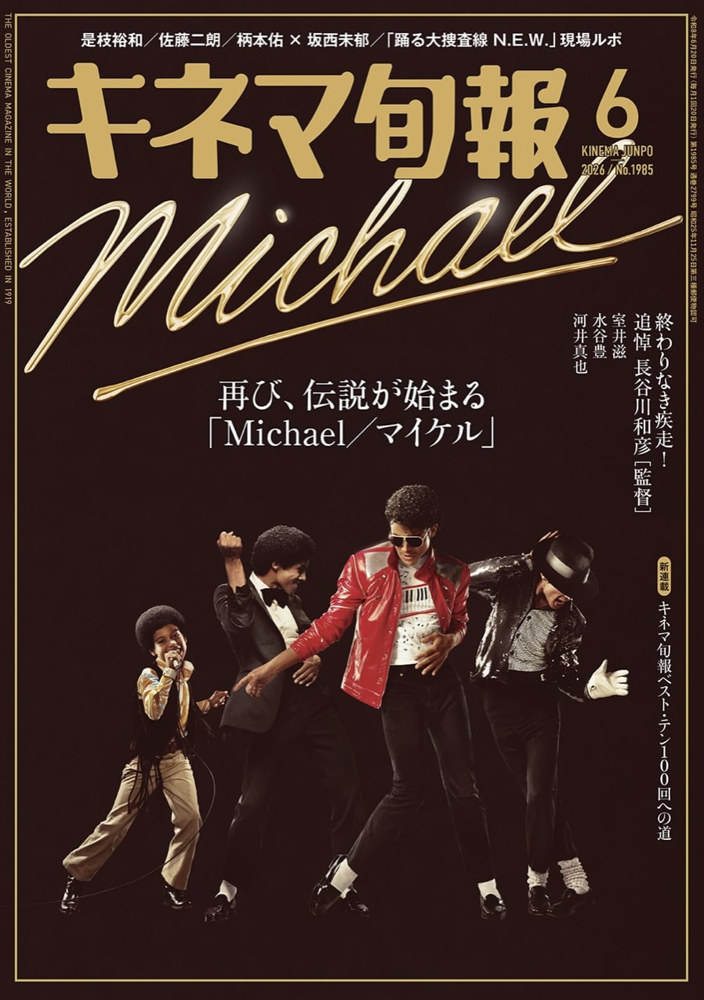
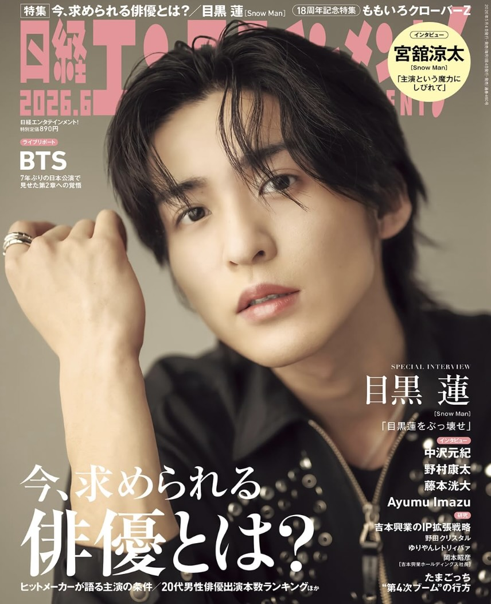
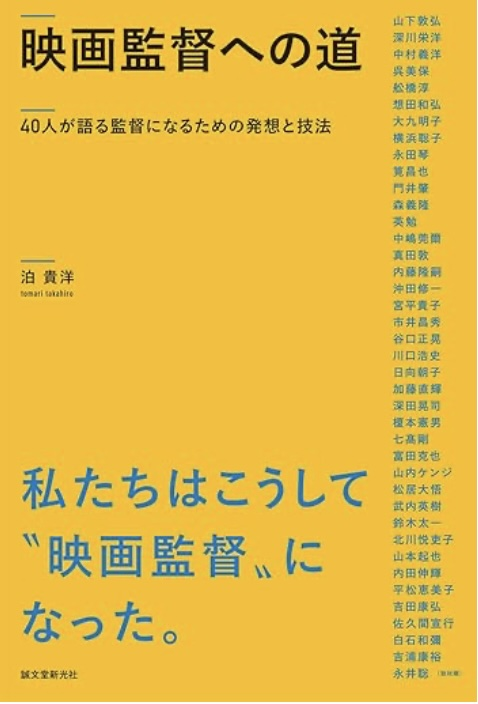
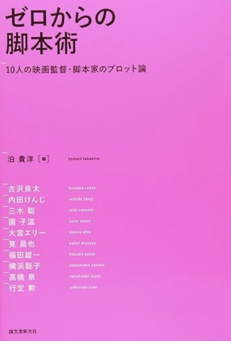
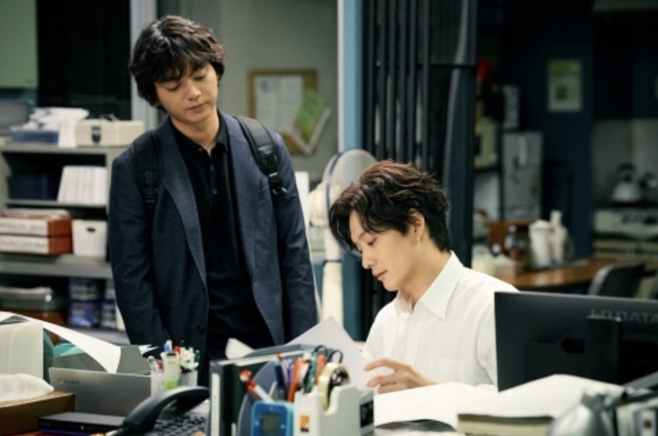

泊 貴洋 TAKAHIRO TOMARI
ライター、インタビュアー
ライター、インタビュアー
雑誌、Webメディア等において、インタビュー・執筆を担当。
映画・ドラマ・カルチャー領域を中心に、俳優、映画監督、クリエイター、経営者まで幅広く取材を行っています。
雑誌『演劇ぶっく』（現・えんぶ）の編集者時代に、演劇と映画の学校「ENBUゼミナール」の立ち上げに参加。1999年、映画雑誌『ピクトアップ』の創刊に携わり、2004年よりフリー。
（敬称略／順不同／すべて掲載実績に基づく）
役所広司／阿部寛／木村拓哉／大泉洋／浅野忠信／妻夫木聡／ムロツヨシ／小栗旬／鈴木亮平／中村倫也／松坂桃李／菅田将暉／神木隆之介／松下洸平／佐藤健／山﨑賢人／北村匠海 ほか多数
樹木希林／新垣結衣／長澤まさみ／満島ひかり／伊藤沙莉／有村架純／広瀬すず／杉咲花／浜辺美波／芦田愛菜／吉高由里子／川口春奈／橋本愛／小芝風花／髙石あかり／原菜乃華 ほか多数
北野武／是枝裕和／黒沢清／岩井俊二／中島哲也／濱口竜介／山崎貴／福田雄一／行定勲／塚原あゆ子／李相日／三木孝浩／沖田修一／石井裕也／今泉力哉／藤井道人／三宅唱 ほか多数
三谷幸喜／岡田惠和／遊川和彦／宮藤官九郎／古沢良太／野木亜紀子／バカリズム／佐々木宏／多田琢／箭内道彦／麻生哲朗／篠原誠／高崎卓馬／福部明浩／佐藤雄介／栗林和明／星野源／幾田りら／ano（あの）／松本隆／野田秀樹／小山薫堂／NIGO／蜷川実花／鈴木おさむ／MIKIKO／佐藤可士和／田中みな実／NIGO／三木谷浩史／安藤徳隆／藤田晋／川村元気 ほか多数

日曜劇場は車いすラグビー 堤真一・山田裕貴・有村架純が伝えたいこと

志田未来 あの「女王」に学んだ大切なこと

志田未来の葛藤と推し活「私、“カワイイ”でできているんです」

豊嶋花インタビュー 王道の胸キュンドラマは非リアルだからこそ楽しめる

上坂樹里 3度目の挑戦で朝ドラを射止めた20歳

『スキャンダルイブ』柴咲コウ＆川口春奈が語る芸能界の裏側と変化

のん 復讐劇のダークヒロインに初挑戦「曲げずに貫いたから今がある」

映画『90メートル』への主演で脚光を浴びる山時聡真のタレントパワーを徹底解析！

及川光博×手越祐也 21年ぶり主演＆7年ぶり復帰で“ゲイカップル”に

俳優として大躍進、M!LK「紅白」初出場も！山中柔太朗のタレントパワーを徹底解析

成宮寛貴が8年ぶり俳優復帰 その心境の変化とは？

大作主演続く山﨑賢人 面白いと思えるものをやらせてもらえる幸せ

杉野遥亮 GP帯ドラマ初主演で感じる“自由”になってきた自分自身

影山優佳 家族との思い出はキャンプ場！ 「トリケラトプスがトリケラトプス過ぎて…」

板谷由夏が「食らいついていかないと」と感じた桐谷健太の佇まいとは・・・

田口トモロヲ✕宮藤官九郎が青春映画で描くパンク精神

『90メートル』中川駿 ポジティブな演出でヤングケアラー問題伝える

『恋愛裁判』アイドル業界の構造や人間の尊厳に鋭く迫る深田監督最新作

映画『国宝』をヒットに導いた李相日監督が語る「全てそろえる」を貫く力

行定勲監督がスピッツの名曲『楓』を映画化 「遠慮」が生むすれ違い

『秒速5センチメートル』奥山由之監督が語る「実写」の醍醐味

三宅唱『旅と日々』つげ義春作品を映画化 特別な時間生む

話題の『遠い山なみの光』 カズオ・イシグロ作品を石川慶監督が映画化

短編映画×バラエティ？ 新恋愛系番組『セフレと恋人の境界線』とは

不倫は人生が終わるほどのことなの？ 『窓辺にて』今泉力哉監督の「悪」とされているものへの問いかけ
向田邦子『阿修羅のごとく』、是枝監督が「断らなかった」ワケ

横浜聡子監督 ベルリン映画祭特別表彰作『海辺へ行く道』

「何より根性がある」橋本環奈を主演に。青春ループ・ホラー『カラダ探し』羽住英一郎監督が目指した新しい怖さ

日経エンタテインメント！ CMフォーカス「目黒蓮起用で認知度を大幅上昇 モトローラ、日本独自CM展開の裏側」

目黒蓮起用で認知度を大幅上昇 モトローラ、日本独自CM展開の裏側

マツケン、西川貴教… PARCO、テレビCM＆デジタル展開のつくり方

PARCOグランバザールCM 最新技術生かして三谷幸喜文楽新作と連動

旭化成のテレビCM SNSで反響のクリエイティブの裏側

CM「はみだせ！うみだせ！旭化成」 コネクテッドTVは高齢層にも効果的

鈴木亮平起用の日産CM 急きょ決まった「インパクトのある企画から」

日産がCMランキングで自動車最上位 「“やっちゃえ”NISSAN」継続理由

テレビCMに芦田愛菜起用のエース 求人応募も前年の26％増に

芦田愛菜起用テレビCMが奏功 カバンのエース、多様性と親しみへの戦略

キネマ旬報 2026年6月号
『箱の中の羊』是枝裕和監督インタビューを担当

日経エンタテインメント！2026年6月号
俳優特集で新井順子プロデューサー（TBSスパークル）へのインタビューを担当

日経エンタテインメント！2026年5月号
『GIFT』鼎談 堤真一×山田裕貴×有村架純、テレビ局の「AI戦略」最前線を担当

日経エンタテインメント！2026年4月号
特集「広告・CM最前線2026」のCM総合研究所、サントリー、曽原剛氏などを担当

キネマ旬報 2026年4月号
映画『90メートル』山時聡真×中川駿 対談を担当

日経エンタテインメント！2026年3月号
豊嶋花、西麻美氏のインタビューを担当

日経エンタテインメント！2026年2月号
上坂樹里、北谷賢治氏のインタビューを担当

日経エンタテインメント！2026年1月号
「ヒットメーカー・オブ・ザ・イヤー」李相日監督（国宝）、坂田悠人氏（8番出口）らを担当

映画監督への道
雑誌「ピクトアップ」の同名連載10年分に新規取材を加えた映画監督40名の人物ドキュメント。山下敦弘、白石和彌、沖田修一、松居大悟、大九明子、武内英樹、永井聡らに取材

ゼロからの脚本術
福田雄一、古沢良太、行定勲、髙橋泉、三木聡、園子温ら10名の映画監督や脚本家に、シナリオの着想や執筆の方法を聞いた書籍。ロングセラーとなり第3刷。中国で中国語版も発売

映画監督になる 06-07
山崎貴、三木聡、ケラリーノ・サンドロヴィッチほか、映画監督へのインタビュー集第3弾

映画監督になる ’05
中島哲也、本広克行、北村龍平ほか、映画監督へのインタビュー集第2弾

映画監督になる ’04
行定勲、李相日、犬童一心ほか、映画監督へのインタビュー集第1弾

『TOKYO MER～走る緊急救命室～』 オフィシャルガイドブック
楽天、日清食品、セブン-イレブン、くら寿司、武田薬品、中村芝翫、ヤンマーなどを担当

新1冊まるごと佐藤可士和。
楽天、日清食品、セブン-イレブン、くら寿司、武田薬品、中村芝翫、ヤンマーなどを担当

日経エンタテインメント！LDH 20th ANNIVERSARY SPECIAL「Circle of Dreams」
岩田剛典インタビュー、「活躍の場を広げるLDH俳優の育成術」などを担当

日経エンタテインメント！Z世代女優Special
豊嶋花、井本彩花インタビュー、「Z世代女優出演注目作品紹介」などを担当

ヒットメーカーが新たな座組で届ける『田鎖ブラザーズ』

令和のラブストーリー満足度ランキング 坂元裕二＆松たか子作品が高評価

令和の恋愛映画No.1ヒット 『あの花～』制作者は“体験価値”を重視

有料会員の6割が20代の新興動画サービス 無料動画世代が課金する理由

北谷賢司が明かす日本エンタメ界"2033年"へのロードマップ

TBS Google WorkspaceをベースにAIを利活用 独自開発ツールも

『紅白』『五輪』で活躍したNHKのAI技術と、正しい情報への使命

「テレ東AI委員会」の立役者たちが語る、守りと攻めの二刀流戦略

AI推進部により「業務効率化の成果が表れてきている」テレビ朝日

テレビ朝日 ロケ先でのCG合成など現場に則したAI開発でリード

「日テレAI」の立役者が語る驚きの機能と外販への道

フジテレビ「AI利活用委員会」が推進する「改革」の現在

TIFFCOM基調講演 ハリウッド映像化界隈で今、動いている日本IPは？

TIFFCOMセミナー「国際共同製作」「アニメ」「テレビ局」の注力ポイントは？

インディーゲームを映像化で世界へ ヒットとアート性両立の『８番出口』

視聴者データから見えた『ちょっとだけエスパー』3つのキーワード

日本の鬼才が世界を席巻している映画界 新時代のヒットメーカーの条件

ドラマレビュー『アイのない恋人たち』第1話

ドラマレビュー『18歳、新妻、不倫します。』第1話
お仕事のご依頼、ご相談など、お気軽にお問い合わせください。